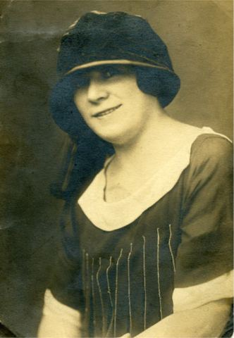

Clara Hecht
1899–1981
Life Story
Owned a bar in a black neighborhood called the Arcade Gardens on Quincy St.
Life events
| Born | |
|---|---|
| Hebrew Name | 20 Mar 1899 · Chaje Jütte |
| Bris/Naming Ceremony | 23 Mar 1899 · Synagogue in Kamionka, Poland |
| Lived | 21 Aug 1905 · 1020, Hanovergasse 8, Vienna, Austria Map · Per Maximillian's birth record. |
| Lived | 29 Jun 1908 · 1200 Romanogasse 12-14, Vienna, Austria Map · Per Rose's birth record |
| Lived | 16 Oct 1910 · 1200 Hirschvogelgasse 3, Vienna, Austria Map · Per Sigfried's, birth record. |
| Departure | 4 Feb 1921 · Le Havre, Manche, Basse-Normandie, France Map · On the Ship: SS Chicago  |
| Arrival | 17 Feb 1921 · Manhattan, New York Map  |
| Lived | 1923 · 3311 East 123rd St, Cleveland, Ohio Map · Occupation: Saleslady. Living with her sister Sadie Bodek.  |
| Married | 25 Oct 1925 · Aron Altchouler · Cuyahoga County, Ohio Map   |
| Lived | 1930 · 3217 East 132nd St, Cleveland, Ohio Map · Speak English: Yes; Read Write: Yes; Married, Homemaker: Yes; language spoken: Yiddish; naturalization status: Alien.  |
| Lived | 1934 · 3733 East 153rd St., Cleveland, Ohio Map  |
| Naturalized | 19 Jun 1934 · Cleveland, Ohio Map |
| Lived | 1940 · 3256 East 117th St, Cleveland, Ohio Map  |
| Died | 26 Mar 1981 · Cleveland, Ohio Map · In the Cleveland Jewish News |
| Buried | 27 Mar 1981 · Mt. Olive Cemetery, Solon, Ohio Map   |
Family

Aron Altchouler1895–1988
Photos

Clara Hecht

Adele Schapira
Jochil Hecht
Clara Hecht
Sigfried 'Fred' Hecht
Rose Hecht

Clara Hecht
Clara Hecht
Clara Hecht
Joseph Elliot Hecht
Clara Hecht
Charles Bodek
Sadie Hecht
Jacob Hecht
Clara Hecht
Aron Altchouler
Clara Hecht
Aron Altchouler
Clara Hecht
Aron Altchouler
Clara Hecht
Aron Altchouler
Clara Hecht
Clara Hecht
Aron Altchouler

Clara Hecht
Clara Hecht

Clara Hecht
Joseph Elliot Hecht
Clara Hecht
Charles Bodek
Sadie Hecht
Anna Rubinoff
Aron Altchouler
+3 more